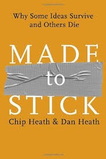
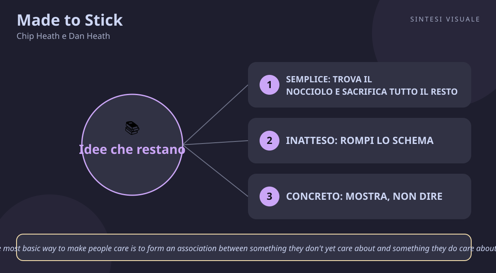

Made to Stick
Chip Heath e Dan Heath · Persuasione e comunicazione
«Made to Stick»
- Semplice
- Inatteso e concreto
- Credibile ed emotivo
- Storie
🧭Introduzione
Chip Heath insegna comportamento organizzativo alla Stanford Graduate School of Business, dove tiene il corso "How to Make Ideas Stick"; suo fratello Dan Heath, ricercatore e consulente (tra gli altri per Duke Corporate Education e fondatore di Thinkwell), studia come insegnare al meglio i concetti difficili. La domanda che li tormentava era semplice e universale: perché certe idee — una leggenda metropolitana, un proverbio, una campagna di beneficenza — restano in testa per anni, mentre presentazioni brillanti e progetti validissimi evaporano in un giorno? Pubblicato da Random House il 2 gennaio 2007 (336 pagine), il libro è diventato un bestseller del New York Times, tradotto in oltre trenta lingue, e ha portato la parola "sticky" nel vocabolario di manager, insegnanti e marketer di tutto il mondo.
Perché conta oggi: viviamo sommersi da messaggi — email, riunioni, slide, post, pitch — e l'attenzione è diventata la risorsa più scarsa. Sapere come si costruisce un messaggio che la gente capisce, ricorda e mette in pratica non è un talento da comunicatori: è una competenza che decide se il tuo lavoro conta o passa inosservato.
A chi è utile: a chi presenta idee in riunione e le vede morire lì; a venditori, marketer e freelance che devono convincere clienti; a insegnanti, genitori e manager che vogliono farsi capire davvero; a chiunque scriva post, curriculum o discorsi.
📘Riassunto
La scintilla centrale: le idee che "restano attaccate" non sono le più intelligenti né le meglio finanziate: sono quelle capite, ricordate e capaci di cambiare opinioni o comportamenti — e condividono tutte le stesse sei caratteristiche, riassunte nell'acronimo SUCCESs.
La struttura logica segue i sei principi, un capitolo per ciascuno, con storie vere e "cliniche delle idee" finali dove gli autori mostrano come rendere più sticky un messaggio reale:
- S – Simple (Semplice): trova il nocciolo dell'idea ed escludil tutto il resto — come Southwest Airlines, la cui intera strategia sta in "siamo LA compagnia low-cost": ogni decisione si giudica da lì. Il nemico è la "maledizione della conoscenza" (Curse of Knowledge): chi sa troppo dimentica cosa significhi non sapere.
- U – Unexpected (Inatteso): rompi uno schema per conquistare l'attenzione, poi mantienila aprendo un "gap di curiosità" — una domanda senza risposta che il cervello vuole chiudere. Le leggende metropolitane (come la famosa bufala del "furto di reni") funzionano così.
- C – Concrete (Concreto): parla di persone, cose e sensi, non di astrazioni — le idee naturalmente sticky "sono piene di parole e immagini concrete". I proverbi durano millenni proprio perché sono concreti.
- C – Credible (Credibile): rendi l'idea credibile con dettagli vividi, statistiche messe in scala umana e prove che il pubblico può verificare da sé — come lo scienziato premio Nobel Barry Marshall, che bevve un bicchiere di batteri per dimostrare la vera causa dell'ulcera.
- E – Emotional (Emotivo): fai in modo che alla gente importi, collegando ciò che ancora non le tocca a ciò che già le sta a cuore — le associazioni benefiche usano il cosiddetto "effetto Madre Teresa": un singolo bambino commuove più di un milione di statistiche.
- S – Stories (Storie): racconta storie che facciano "provare mentalmente" l'azione giusta — la storia dell'allenatore e delle lezioni di sportività, o le simulazioni che cambiano davvero i comportamenti.
Il punto di svolta: il capitolo sulla maledizione della conoscenza: il problema non è che le tue idee siano deboli, è che tu sai troppo per spiegarle semplicemente. Da lì il lettore smette di incolpare il pubblico ("non capiscono niente") e inizia a riprogettare i propri messaggi.
L'eredità oggi: il framework SUCCESs è usato in corsi di Stanford e in aziende di tutto il mondo; concetti come "curiosity gap" e "Velcro Theory of Memory" (più ganci ha un'idea, meglio resta in memoria) sono entrati nel marketing digitale, nella didattica e nel public speaking contemporaneo — da TED ai thread virali.
💡Concetti chiave
- Semplice: trova il nocciolo e sacrificalo tutto il resto — un'idea sticky ha un cuore solo, come un proverbio; il resto è rumore da tagliare.
- Inatteso: rompi lo schema, poi apri un gap di curiosità — la sorpresa conquista l'attenzione, il mistero la trattiene.
- Concreto: mostra, non dire — persone, oggetti, sensi e numeri in scala umana battono sempre le astrazioni.
- Credibile: aiuta la gente a verificare da sé — dettagli vividi, statistiche umanizzate e prove testabili battono l'autorità dichiarata.
- Emotivo: collega il nuovo a ciò che conta già — la gente agisce per ciò che sente, non per ciò che sa.
- Storie: fai provare l'azione in anticipo — una buona storia è un simulatore di volo per il comportamento giusto.
📖1. Semplice: trova il nocciolo e sacrifica tutto il resto
- Definizione semplificare non significa banalizzare né usare poche parole: significa individuare il cuore dell'idea — l'unica cosa che il pubblico deve ricordare — e avere il coraggio di escludere tutto il resto, anche se importante. Gli autori la chiamano "Commander intent" dal mondo militare: un messaggio centrale così chiaro da guidare ogni decisione autonoma sul campo.
- Esempio Southwest Airlines decide tutto — rotte, pasti, biglietti — in base a un solo nocciolo: "siamo LA compagnia low-cost". Quando una proposta non abbassa i costi, si scarta da sola, senza bisogno del capo.
- Come applicarlo (a) scrivi la tua idea in una frase di dieci parole; (b) chiediti "se il pubblico ricordasse una cosa sola, quale?"; (c) usa un'analogia o un proverbio come contenitore (il Golden Rule dura da millenni perché è un nocciolo perfetto); (d) taglia una slide, un argomento, un aggettivo a ogni revisione.
- Errore comune la maledizione della conoscenza — più sei esperto, più parli in astratto ("sinergia", "ottimizzazione", "visione integrata") e meno il pubblico capisce; oppure voler dire tutto per paura di tralasciare qualcosa, e non far ricordare niente.
- Collegamento il "principio di Pareto" applicato alla comunicazione e Essentialism di Greg McKeown (meno ma meglio); in ambito militare, l'intento del comandante di cui parla anche Team of Teams di Stanley McChrystal.
📖2. Inatteso: rompi lo schema, poi apri un gap di curiosità
- Definizione l'attenzione si conquista violando un'aspettativa (sorpresa) e si trattiene creando un buco di conoscenza che il cervello sente il bisogno di chiudere (curiosità): indovinelli, misteri, finali rimandati. La sorpresa dice "fermati", la curiosità dice "resta".
- Esempio in riunione, invece di aprire con "i risultati del trimestre", dici: "a marzo abbiamo perso il nostro cliente migliore — e ci ha insegnato come raddoppiare le vendite". Tutti alzano la testa: lo schema "presentazione noiosa" è rotto e il gap ("come?") li tiene incollati.
- Come applicarlo (a) prima di parlare o scrivere, chiediti "cosa si aspetta il pubblico?" e rompi quell'aspettativa nei primi 30 secondi; (b) poni una domanda prima di dare la risposta; (c) usa quiz, storie interrotte, dati controintuitivi; (d) chiudi sempre i gap che apri, altrimenti la curiosità diventa frustrazione.
- Errore comune stupire per stupire — il colpo di scena fine a sé stesso diverte ma non fa ricordare il messaggio; oppure aprire dieci curiosità e non chiuderne nessuna, come certe serie TV che perdono gli spettatori.
- Collegamento la teoria del "gap informativo" dello psicologo George Loewenstein sulla curiosità; nel marketing, i titoli clickbait ne sono la versione degradata — funzionano sullo stesso meccanismo ma tradiscono la promessa.
📖3. Concreto: mostra, non dire
- Definizione le idee astratte significano cose diverse per persone diverse e scivolano via dalla memoria; quelle concrete — nomi, volti, oggetti, numeri toccabili con mano — restano perché il cervello le può vedere. Gli autori parlano di "Velcro Theory of Memory": più ganci sensoriali ha un'idea, meglio si attacca alla memoria.
- Esempio non dire "dobbiamo ridurre gli sprechi energetici del 12%" (astratto, dimenticato in un'ora); di' "ogni notte lasciamo accese luci che basterebbero a illuminare tre palazzi come questo" — stessa informazione, ma ora si vede.
- Come applicarlo (a) caccia aggettivi vaghi ("innovativo", "di qualità") e sostituiscili con fatti osservabili; (b) traduci ogni numero in scala umana (persone, campi da calcio, caffè al giorno); (c) racconta un caso singolo invece della media statistica; (d) fai toccare, provare o immaginare fisicamente ciò di cui parli.
- Errore comune credere che "concreto" significhi "lungo e dettagliato" — bastano uno o due dettagli vividi ben scelti; oppure restare esperti-che-parlano-da-esperti, dimenticando che la differenza tra esperto e principiante è proprio la capacità di pensare in astratto.
- Collegamento Talk Like TED di Carmine Gallo (storie e immagini concrete sul palco); la "scala umana" di cui parla anche Chip Heath in Switch ("riduci il problema finché non entra in una persona").
📖4. Credibile: aiuta la gente a verificare da sé
- Definizione la credibilità non viene dal dire "fidati di me" ma dal dare al pubblico gli strumenti per convincersi da solo: dettagli così vividi da sembrare vissuti, statistiche presentate come relazioni memorabili (non come cifre nude), esempi verificabili e prove sul campo. L'autorità aiuta, ma la verificabilità convince.
- Esempio Barry Marshall, convinto che l'ulcera fosse causata da un batterio e deriso dai colleghi, bevve davanti a tutti un bicchiere di Helicobacter pylori, si ammalò e guarì con gli antibiotici — vinse il Nobel perché rese la sua idea inverificabile... verificata in prima persona.
- Come applicarlo (a) accompagna ogni numero con la relazione che conta ("non il dato, ma cosa significa"); (b) cita fonti che il tuo pubblico già rispetta; (c) offri un test fai-da-te ("provate voi stessi per una settimana"); (d) usa dettagli sensoriali precisi: una storia con nomi, luoghi e orari sembra vera perché è controllabile.
- Errore comune bombardare di statistiche nude pensando che i numeri parlino da soli — "le statistiche da sole raramente significano qualcosa"; oppure appoggiarsi solo al proprio titolo ("lo dico io che sono esperto"), che crolla appena arriva un esperto di parere opposto.
- Collegamento Le armi della persuasione di Cialdini (il principio di autorità e riprova sociale); il metodo scientifico stesso — un'affermazione vale quanto è falsificabile, direbbe Karl Popper.
📖5. Emotivo: collega il nuovo a ciò che conta già
- Definizione la gente non agisce perché capisce, agisce perché sente: per farle importare di qualcosa di nuovo devi associarlo a qualcosa che le sta già a cuore — valori, identità, persone amate, paure e speranze. Non si tratta di manipolare, ma di mostrare perché l'idea merita un posto tra le cose che contano.
- Esempio le donazioni crollano davanti a "3 milioni di bambini malnutriti" e decollano davanti alla foto e al nome di una sola bambina: è l'effetto Madre Teresa — il singolo commuove, la massa anestetizza. Le grandi campagne lo sanno e mostrano un volto, non un grafico.
- Come applicarlo (a) chiediti "cosa vuole davvero il mio pubblico?" (non cosa dovrebbe volere) e parti da lì; (b) parla a individui, non a categorie ("Marco, 8 anni" batte "i minori"); (c) usa il "tu" e mostra il beneficio concreto nella sua vita; (d) fai leva sull'identità ("gente come noi fa così") più che sul dovere.
- Errore comune restare sul piano razionale — tabelle, ROI, specifiche — e stupirsi che nessuno si muova; oppure cavalcare emozioni a buon mercato (paura, indignazione) che ottengono clic ma distruggono fiducia nel lungo periodo.
- Collegamento L'intelligenza emotiva di Daniel Goleman (le decisioni nascono dall'emozione e la ragione le giustifica); il marketing narrativo di Seth Godin (All Marketers Tell Stories): i fatti dicono, le emozioni vendono.
📖6. Storie: fai provare l'azione in anticipo
- Definizione le storie sono simulatori di volo mentali: permettono al pubblico di "provare" la situazione e la risposta giusta senza viverla davvero, così quando il momento arriva il comportamento è già allenato. Le tre trame più potenti sono la sfida (Davide contro Golia), la connessione (ponte tra diversi) e la creatività (lampo di genio che risolve).
- Esempio l'allenatore di basket che ogni anno racconta ai nuovi arrivati la storia della partita in cui la squadra vinse perché tutti passarono la palla invece di fare gli eroi: nessuna regola scritta, ma da quel giorno chi arriva sa già come ci si comporta in campo.
- Come applicarlo (a) chiudi ogni presentazione con una storia di qualcuno che ha applicato l'idea e ha vinto (o non l'ha applicata e ha perso); (b) raccogli sistematicamente le storie dei clienti e dei colleghi: sono il tuo arsenale; (c) rendi protagonista l'ascoltatore ("immagina quando ti capiterà di..."); (d) una storia al giorno toglie la maledizione della conoscenza meglio di dieci slide.
- Errore comune raccontare storie su di sé come eroe invece che come guida — il pubblico si immedesima nel protagonista, non nell'ammiratore; oppure usare aneddoti divertenti ma slegati dal messaggio, che fanno ridere e dimenticare.
- Collegamento Joseph Campbell e il "viaggio dell'eroe", la struttura dietro film e pitch di successo; Storytelling applicato al business in Building a StoryBrand di Donald Miller.
💬Citazioni da ricordare
"By 'stick,' we mean that your ideas are understood and remembered, and have a lasting impact – they change your audience's opinions or behavior." — La definizione operativa di tutto il libro: un'idea vale solo se viene capita, ricordata e cambia qualcosa. Misura ogni tuo messaggio con queste tre parole: capito? ricordato? cambia qualcosa?
"Statistics are rarely meaningful in and of themselves. Statistics will, and should, almost always be used to illustrate a relationship. It's more important for people to remember the relationship than the number." — Il principio anti-slide-noiose: non importa che ricordino il numero, importa che ricordino cosa significa il numero. Ogni statistica deve raccontare una relazione.
"The most basic way to make people care is to form an association between something they don't yet care about and something they do care about." — La formula dell'emozione in una riga: non chiedere alla gente di interessarsi dal nulla, aggancia il nuovo a ciò che ama già.
🌍Esempi di oggi
- Il collega che presenta e tutti guardano il telefono. Slide piene di gergo ("ottimizzazione sinergica dei processi") e zero storie: maledizione della conoscenza pura. Se avesse aperto con il nocciolo in una frase e un caso concreto di un cliente, i telefoni sarebbero rimasti in tasca.
- La raccolta fondi della scuola. Il volantino con "servono 5.000 euro per il laboratorio" raccoglie poco; quello con la foto di Giulia, 9 anni, e la frase "con 20 euro compri il microscopio con cui Giulia vedrà le sue prime cellule" fa il tutto esaurito in una settimana: effetto Madre Teresa in azione.
- Il medico che convince a camminare. Dire "faccia 150 minuti di attività aerobica settimanale" non muove nessuno; dire "una passeggiata di 20 minuti dopo cena con suo marito abbassa la pressione più di questa pillola — e vi fa litigare di meno" è semplice, concreto, emotivo e memorabile: un messaggio sticky.
🛠️Azioni pratiche
- Trova il nocciolo: prendi un messaggio che devi dare (email, proposta, discorso) e riscrivilo in una frase di dieci parole; cancella tutto ciò che non serve a quella frase.
- Concretizza un numero: prendi una statistica che usi spesso e traducila in scala umana (persone, soldi in tasca, campi da calcio) — usala così la prossima volta.
- Chiudi con una storia: alla prossima riunione o cena in cui vuoi convincere qualcuno, prepara una storia vera di 60 secondi in cui qualcuno ha applicato la tua idea e ha funzionato — e racconta quella invece dell'elenco di argomenti.
💎Da portare a casa
Le idee non vincono perché sono le migliori: vincono perché sono semplici, inattese, concrete, credibili, emotive — e raccontate come storie.
Ti è rimasto un dubbio o vuoi andare più a fondo? Rispondi in chat con il numero del concetto (1–6) e lo espandiamo insieme con altri esempi, oppure fai una domanda su un tema: presentazioni che convincono, vendite, negoziazione, pubblic speaking, gestione dello stress, emozioni, carriera...
🖼️In un colpo d’occhio

Tocca l’immagine per ingrandirla.